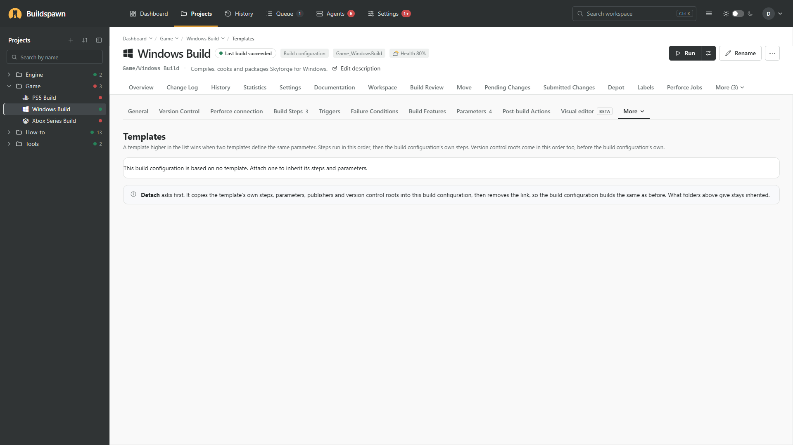

Templates
Share steps and settings between many build configurations. Change the template once and every build configuration based on it follows.
A template holds build steps, parameters, post-build actions and version control roots, just like a build configuration, but it never runs by itself. A build configuration attaches one or more templates and inherits what they hold. It can still add its own steps and override what it inherits.
Use a template when several build configurations do almost the same thing. For example, Windows Build, PS5 Build and Xbox Series Build can share one Platform build template with the compile, cook and package steps, and each passes its own PLATFORM parameter.
Templates or projects? A project passes its settings to everything inside it. A template reaches only the build configurations that attach it, wherever they sit below its project.
Create a template
See also Build configuration template as an item type.
- Open the project that should own the template. Build configurations in this project and its subprojects can use it.
- Click New Item.
- Type a name, for example
Platform build. - Choose Build configuration template and click OK.
- Add the build steps, parameters and version control roots the build configurations should share, the same way as on a build configuration. Click Save.
The project's Settings › Templates lists its templates, with a count. A template's page has a Used by section that lists the build configurations attached to it, so you can see who a change reaches.
A template that is in use cannot be moved. Detach it from every build configuration first. Delete does the detaching for you (see below).
Attach a configuration to a template
- Open the build configuration and click Settings.
- Open More › Templates.
- Pick the template to attach. Only templates of this project and the projects above it are offered.
- To attach more than one, add them in turn and use the up and down buttons to set their order.

The order rules
- Steps from the templates run first, template by template in the listed order, then the build configuration's own steps.
- Parameters: when two templates define the same parameter, the template higher in the list wins. The page shows which one lost.
- Version control roots come in the same order, before the build configuration's own roots.
- The whole chain is: Root project, then each project, then the templates, then the build configuration itself. The nearer one wins.
Templates carry steps, parameters, post-build actions and roots. Triggers and build features are not part of a template: set them on each build configuration. A Pipeline build configuration takes only parameters from a template.
A worked example: Stream copy
A Perforce studio copies the Main stream to the Drop streams every night, and the Drop streams to Live. Twenty build configurations do the same job with different streams. The studio makes one template Stream copy:
- One Perforce root, with polling off.
- The parameter
env.StreamMapping, read-only, empty. Each build configuration overrides it. - The parameter
env.CopySourceCL, asked when the build runs, with the description Source CL to use on the copy. Leave empty to use latest. - One PowerShell step Copy to Stream that runs the copy script.
Each build configuration, for example Copy Main to Drop9, is made with Start from Template › Stream copy. It overrides env.StreamMapping with main->drop9 and has its own Schedule trigger at 02:00. When the script changes, the studio changes the template once. See Copy a stream (Main to Drop) and Create a build configuration from a template.
Override inherited settings
On the Build Steps and Parameters homes, an item from a template has a chip with the template's name. For each one you can:
- Override: change it for this build configuration only, for example a different command or default value.
- Disable in this job: skip it here only.
- Reset: go back to what the template gives.
You can also switch off a template's version control root for one build configuration.
Detach a template
Detach asks first. It copies the template's own steps, parameters, post-build actions and version control roots into the build configuration, then removes the link. The build configuration builds the same as before, but no longer follows the template. Whatever the projects above give stays inherited.
Before you change a template, look at its Used by list. Every build configuration listed there changes with it, including the order of their steps.